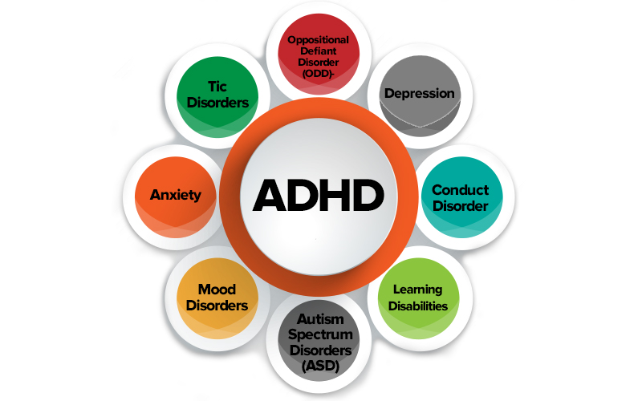

Welkom bij AD(H)D website waar u alle informatie kunt vinden over ADD en ADHD onze webiste gaat over ADD
(Attention Deficit Disorder) en ADHD (Attention Deficit Hyperactivity Disorder)
dit worden beschouwd als neurobiologische stoornissen die invloed hebben op de aandacht, impulsiviteit en hyperactiviteit. En geen ziekte dus!

kennis over ADHD, speciaal geschreven voor jongeren. Wat is ADHD? Wat betekent dit voor jou?
Misschien herken je het wel. In de klas vind je het moeilijk om langere tijd je aandacht erbij te houden. Daardoor mis je uitleg en doe je thuis langer over je huiswerk. Of je voelt je erg onrustig, kan niet lang stilzitten en wilt steeds iets anders doen. Misschien vergeet je vaak belangrijke dingen. Je hebt hier veel last van: in de klas, thuis en in sociale situaties. Misschien maakt dit je verdrietig of onzeker als anderen daarover mopperen. Misschien heeft een hulpverlener je verteld dat jouw klachten bij ADHD passen.
Hier onder vindt u korte informatie over ADD en ADHD

In onze website hebben we informatie over ADD en ADHD en kunt u ook meer dingen vinden in onze website
zoals wat en hoe moet u omgaan met mensen die ADD en ADHD hebben en wat u moet doen als iemand lastig heeft door iets